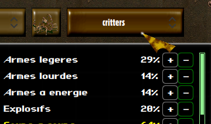

Factions are a tool to determine NPC behaviour towards the player character, or towards other NPCs. The most important use for factions is to determine whether NPCs are considered hostile or friendly: NPC from hostile factions will shoot each other on sight.
You may also use faction to gauge the level of general appreciation from NPC towards the player using the Reputation system. It is only an indicative value by default, but you may increase, decrease and use it in scripts to implement specific behaviours depending on whether the player is liked or disliked by a NPC's faction.
Factions can be managed in the Game Editor by going into the Diplomacy. Here's an example of how to create a new faction:
What are all those controls about:
You will also need to set factions on your NPCs. You have two ways to set a NPC faction:
Directly from the character editor, using the faction input: 
Or, if you want to change that value during the game, by using the statistics.faction property on the NPC's game object, as such:
level.findObject("mynpc").statistics.faction = "player"During the game, you may also update the relationships between factions. There are two ways of doing that:
Directly from an NPC object, using the setAsEnemy or setAsFriendly. For instance:
game.player.setAsEnemy(npc)game.player.setAsFriendly(npc)Using the setFactionAsEnemy method and specifying the two factions' names:
game.setFactionAsEnemy("player", "diamond-dogs", true)As you may not always control the moment when a faction changes its relationship towards another, there is also a hook in the main.mjs script that you can use to react to such changes:
class Game {
diplomacyUpdate(factions, hostility) {
const includesPlayer = factions.indexOf("player") >= 0;
const includesCitysample = factions.indexOf("city-sample") >= 0;
if (hostility && includesPlayer && includesCitysample) {
game.dataEngine.setFactionAsEnemy("player", "mordino", true);
}
}
}
export function create(model) {
return new Game(model);
}
In this example, the mordino faction is a sub-set of the city-sample one: we want the player to be able to start a fight with mordino without declaring war to the whole town of city-sample. However, when the player becomes an enemy of the town, then the mordino faction will join in against the player.
There are three useful method you need to know to manage the player's reputation towards other factions:
The action queue allows an NPC to perform a set of actions. Even when you want to perform a single action,
you'll need to use the queue: you can either pile up new actions on it, or interrupt the current course
of action to start a new one.
We've already introduced how to use it in Characters 1.6. We will now
see in details all the features of the action queue.
Before your scripts interact with an action queue, you should take care of it's current state. You will want to know whether the NPC is already doing something or not:
if (!character.actionQueue.isEmpty())
console.log("Character is already doing something");If you want your NPC to drop what he's doing before starting your new task, you'll want to reset the queue:
character.actionQueue.reset()Lastly, when the queue isn't already running, you'll want to start it, after sheduling your actions:
character.actionQueue.pushMovement(1, 1);
if (character.actionQueue.start())
console.log("Action started");
else
console.log("Action could not start");Note that the start method returns a boolean reporting whether the action queue actually started or not. If the character cannot perform the first action you scheduled, the method will return false. Otherwise, the actions will run one after the other, until all the actions have been run or until an action fails.
You do not need to call start on the actionQueue if it was already running when you started stacking new actions.
If you do, start will always return true, as the queue is running indeed.
Once its started, the action queue will successively trigger all the actions one by one, until the queue is either completed or until one of the action cannot be completed.
When an action queue interrupts, either because of success or failure, the onActionQueueCompleted method gets called on the NPC's script object.
The Reach action allows you to get in range of your target. The goal of the Reach action is to look for available positions, rather than to try and move to a specific one.
That is because you don't always know if your NPC will be able to move to specific coordinates. But you will often not really care about specific coordinates: you mostly care about distance, line of sight, cover value... that's what the Reach action really is for.
Let's start with something simple. We want a character to go to bed:
character.actionQueue.pushReach(level.findObject("my-bed"))
This will make the character move to somewhere he'll be in contact with "my-bed". Easy right ?
Now, what if we don't really need to get that close:
character.actionQueue.pushReach(level.findObject("my-bed"), 3)
In this example, we will reach the closest coordinates which are in a range of 3 around "my-bed".
You can always use coordinates instead of game objects as paramters to pushReach, such as character.actionQueue.pushReach(x, y, 3).
Finally, we have a more advanced way to pick where our NPC will go: you can pass a callback to pushReach which will be called to rate the best coordinates available matching the criteria. Here's an example:
character.actionQueue.pushReach(game.player, 5, function(x, y, z) {
return -level.getVisionQuality(
game.player.position.x, game.player.position.y,
x, y);
});
The callback must return the lowest values for the most preferred coordinates. On equal ratings, the coordinates closest to the target will be picked.
level.getVisionQuality is a helper that returns a value between 0 and 100.
100 represents a perfect visibility, 0 represents a lack of line of sight.
Note that, by default, the Reach action will always lead the NPC to coordinates with line of sight towards the target.
This one is easy. Sometimes, after your NPC has moved or performed an action, you want it to look in a specific direction. You have two options for that:
character.actionQueue.pushLookAt(1, 1)In this example, we send case coordinates.
character.actionQueue.pushLookAt(game.player)In this example, we send an object for our character to look at. Namely, the player, but it could be anything else.
The Look at action doesn't guarantee line of sight. It just turns the character in the general direction of the coordinates or object you used as parameters.
Things are getting serious. This is typically the kind o action you'll want to use to attack other characters.
You'll need two things to perform an item use: a target, and an item to use.
There are two different way to setup an item use: by reference to the item slot, or directly with the
item's game object. Let's see how that may work:
character.actionQueue.pushItemUse(game.player, "use-1")In this example, we use the item in the item slot "use-1" on the player.
const item = character.inventory.getEquippedItem("use-1");
character.actionQueue.pushItemUse(game.player, item, "shoot");This example is a bit more explicit. Here, we retrive the game object for the item equipped in the "use-1" item slot, and then use it on the player with the use mode "shoot".
Let's use what we've learned in a more advanced example, to see how that would come to practical use:
const item = character.inventory.getEquippedItem("use-1");
character.actionQueue.pushReach(game.player, item.getRange());
for (var i = 0 ; i < item.ammo ; ++i)
character.actionQueue.pushItemUse(game.player, item, "shoot");
character.actionQueue.pushItemUse(null, item, "reload");
character.actionQueue.start();
Here, we trigger as many uses of the gun as can be fired, depending on how many bullets are loaded. Then, we use the item again, but this time
with the "reload" use mode.
Note how the "reload" action doesn't have a target: some items can be used without a target. In which case, you need to pass null as the target parameter.
Note that, while all the examples use equipped items, you can also use this action on items that are not equipped. In fact, it will work with any item, even an item that isn't in the character's inventory: be careful with that though, it may have some unexpected side effects.
All characters, including NPCs, can use skills. Let's say you want an NPC to sneakily lockpick a door, here's how you'd go about it:
const target = level.findObject("my-door");
character.actionQueue.pushSkillUse(null, "sneak");
character.actionQueue.pushReach(target);
character.actionQueue.pushSkillUse(target, "lockpick");
if (character.actionQueue.start())
console.log("sneakily trying to pick a door");
else
console.log("oops, I cannot sneak right now !");
In this example, we use both the sneak and the lockpick skill: sneak skill does not require a target, so we pass "null" as the first parameter to pushSkillUse. We then reach the target door to be in lockpick range, and use a new action to lockpic the door.
Note that sneaking is impossible in certain conditions (like if you're already detected), which is why we expect the action queue not to start if our first skill use fails.
The interaction action is mostly useful to the player character, but it can also be used on NPCs, as scripts can react to those interactions. It's also a simple way to trigger the "use" animation on a character.
Here's how it's used:
const target = level.findObject("my-target");
character.actionQueue.pushReach(target);
character.actionQueue.pushInteraction(target, "use");
character.actionQueue.start();Available interactions are use, push, look and talk-to.
Note that, if it exists, the onUse method on the target's script object will be invoked. The first and only parameter of that method being the NPC's game object, you will also be able to identify where the interaction came from, and check if it came from the player or a specific NPC.
When using the action queue in combat, you will want to know how much action points are required to perform each and all of the actions you schedule.
You should know that, during combat, your character action queue will be interrupted
as soon as he doesn't have enough action points left to perform the next action.
If you do not pick it up again, using the onActionQueueCompleted
callback, the game might get stuck in your NPCs turn, as it is not over, yet your NPC
won't be doing anything to end its own turn.
There are helpers to get the estimated action point cost of each action:
character.actionQueue.getMovementApCost(x, y)
character.actionQueue.getReachApCost(target, range)
character.actionQueue.getReachApCost(target, range, callback)
character.actionQueue.getItemUseCost(target, slot)
character.actionQueue.getItemUseCost(target, item, useMode)
character.actionQueue.getSkillUseCost(target, skill)
character.actionQueue.getInteractionApCost(target, interaction)
There are also a couple helper actions: those are not really action, but they can help you in implementing more advanced stuff, and are mighty usefull when you use your action queue to have your NPCs play a scene.
First is the waiting helper, when you want your NPC to pause between two actions:
character.actionQueue.pushMovement(2, 3);
character.actionQueue.pushWait(5); // 5 seconds
character.actionQueue.pushMovement(character.position.x, character.position.y);
character.actionQueue.start();
This example has the character move to the coordinates 2/3, waits 5 seconds there, then go back to wherever he was initially.
The second helper is a bit more exciting: it's the script helpers, allowing you to execute your own scripts between actions. Let's update our previous example a bit:
character.actionQueue.pushMovement(2, 3);
character.actionQueue.pushScript(function() {
level.addTextBubble(character, "Greetings, be back soon fellow scripters", 5000);
return true;
});
character.actionQueue.pushWait(5); // 5 seconds
character.actionQueue.pushMovement(character.position.x, character.position.y);
character.actionQueue.start();
This is a typical example of what script and wait actions are good at:
- There are no action to pop a text bubble, so the script action allows you to do so within a sequence of actions.
- And you do not want an NPC to start moving away as soon as the text bubbles pop, which is where the wait action comes in handy.
Script actions do not have to return a value. But when they do, it can be used to interrupt the action queue. Your script action will interrupt the queue if it returns false.
If you want your world to look alive, you will need to set up some Routines on your NPCs. Routines are designed to trigger specific behaviours at given times. A typical usecase would be a shopkeeper closing his shop at night and going to sleep.
The first step is to set up the RoutineComponent object in our NPC's constructor:
import {CharacterBehaviour} from "./character.mjs";
import {RoutineComponent} from "../behaviour/routine.mjs";
class MyNPC extends CharacterBehaviour {
constructor(model) {
super(model);
this.routine = new RoutineComponent(this, [
{ hour: "6", minute: "30", callback: "wakeUp" },
{ hour: "23", minute: "45", callback: "goToSleep" }
]);
}
}When creating our new RoutineComponent, the first parameter is the concerned script object, while the second parameter describe the routine we want to implement.
In our Routine description, we've defined two callbacks: wakeUp and goToSleep. These methods will trigger at exactly 6:00 and 23:45... but we first have to implement those:
import {CharacterBehaviour} from "./character.mjs";
import {RoutineComponent} from "../behaviour/routine.mjs";
class MyNPC extends CharacterBehaviour {
constructor(model) {
super(model);
this.routine = new RoutineComponent(this, [
{ hour: "6", minute: "30", callback: "wakeUp" },
{ hour: "23", minute: "45", callback: "goToSleep" }
]);
}
wakeUp() {
const myDesk = level.findObject("mynpc-desk");
this.model.actions.pushReach(myDesk);
this.model.actions.start();
}
goToSleep() {
const myBed = level.findObject("mynpc-bed");
this.model.actions.pushReach(this.myBed());
this.model.actions.start();
}
}Now we're talking. With this implemention, our NPC will reach the mynpc-desk object at day, while he will move to the mynpc-bed at night.
Let's go a little bit further. What if your NPC has an associated dialog, or text bubbles ? You may want those behaviours to change depending on the current running routine. Let's see how to achieve this result:
import {CharacterBehaviour} from "./character.mjs";
import {RoutineComponent} from "../behaviour/routine.mjs";
class MyNPC extends CharacterBehaviour {
constructor(model) {
super(model);
this.routine = new RoutineComponent(this, [
{ hour: "6", minute: "30", callback: "wakeUp" },
{ hour: "23", minute: "45", callback: "goToSleep" }
]);
}
wakeUp() {
const myDesk = level.findObject("mynpc-desk");
this.model.actions.pushReach(myDesk);
this.model.actions.start();
}
goToSleep() {
const myBed = level.findObject("mynpc-bed");
this.model.actions.pushReach(this.myBed());
this.model.actions.start();
}
get dialog() {
if (this.routine.getCurrentRoutine().callback === "goToSleep")
return null;
return "mynpc-dialog";
}
get textBubbles() {
if (this.routine.getCurrentRoutine().callback === "goToSleep")
return [{ content: "Zzz", duration: 2500, color: "gray"}];
return [];
}
}
In this example, we've overloaded the getters for dialog and textBubbles so that our character
would start the mynpc-dialog during the day, or use our custom text bubbles during night.
To achieve that result, we used this.routine.getCurrentRoutine() to retrieve
the current routine object, which allows us to identify the current routine with the
callback attribute.
A persistent routine is a routine that triggers its callback on a regular basis, ensuring that our NPC will go back to it's routine whenver he's done with any other punctual task.
In the previous chapter, we got a bit ahead of ourselves. Our non-persistent routine is perfect for instant changes, but not so much for performing actions. What if our NPC cannot reach their bed or desk when the clock hits 6:30 or 23:45 ? With a non-persistent routine, they'll give up and won't do anything until the next routine triggers.
With a persistent routine however, the routine callback will be triggered periodically, allowing the character to reach its destination as soon as a path is available to him. Let's see how to turn out previous example into a persistent routine:
import {CharacterBehaviour} from "./character.mjs";
import {RoutineComponent} from "../behaviour/routine.mjs";
class MyNPC extends CharacterBehaviour {
constructor(model) {
super(model);
this.routine = new RoutineComponent(this, [
{ hour: "6", minute: "30", callback: "wakeUp" },
{ hour: "23", minute: "45", callback: "goToSleep" }
]);
this.routine.refreshInterval = 5000;
this.routine.enablePersistentRoutine();
}
wakeUp() {
const myDesk = level.findObject("mynpc-desk");
this.model.actions.pushReach(myDesk);
this.model.actions.start();
}
goToSleep() {
const myBed = level.findObject("mynpc-bed");
this.model.actions.pushReach(this.myBed());
this.model.actions.start();
}
}
To turn our routine in a persistent one, we used the enablePersistentRoutine method
on our routine component.
Optionally, we can also manually set the refreshInterval property, to tell the engine at which frequency
should our callback be triggered. By default, it will be between 4 and 7 seconds.
On some occasion, you might want to pause the Routine on a NPC. You can achieve this by using the toggleRoutine helper, as following:
import {toggleRoutine} from "../behaviour/routine.mjs";
function interruptRoutineOnMyNPC() {
const myNpc = level.findObject("mynpc");
toggleRoutine(myNpc, false);
}In the function we defined up here, we disable the Routine on mynpc. The toggleRoutine helper takes two parameters: the first one is the NPC's game object (not it's script object, mind you), and the second one is a boolean defining whether you want the routine to be enabled or disabled.
There are a few things you should know about the Routine component:
Scenes are a useful tool when you want to stage a series of interaction between groups of characters. The SceneManager object will let you define the "actors" along with a series of steps describing what happens during the scene.
We will first create our scene object in a new folder of our own:
import {SceneManager} from "../behaviour/SceneManager.mjs";
class MyScene extends SceneManager {
constructor(parent) {
// On construction, we must provide a unique key for our scene:
super(parent, "my-scene");
// We then provide a list of states, which we will implement below:
this.states = [
this.firstState.bind(this)
];
}
firstState() {
const actions = game.player.actionQueue;
actions.pushSpeak("This character speech was triggered by a scene.", 3000, "white");
actions.pushWait(3);
actions.pushScript(this.triggerNextStep.bind(this));
actions.start();
}
}
Each scene is made of one or several steps, allowing you to eventually re-trigger
a scene when one of the step fails.
In this code, firstState is our only step. Each step
should constitute of a list of actions on one or several characters. When all the
actions have ran, we move to the next step by calling triggerNextStep
on the scene manager.
We do the latter by using actions.pushScript(this.triggerNextStep.bind(this))
to ensure that it will be ran after the last action.
The actionQueue provides a couple procedures that are useful in scenes, such as pushSpeak, pushWait and pushScript.
pushSpeak allows you to schedule a TextBubble through the action Queue. The parameters are the text that should appear, how long it will lasts in milliseconds, and the text color.
pushWait will let the actionQueue hang for as many seconds as specified in the parameter.
pushScript is used to trigger scripts within the action Queue. You can use it to delay the execution of any script you need until after other actions triggered. It is very useful when several characters are involved in the same scene state:
firstState() {
const actions = game.player.actionQueue;
actions.pushSpeak("This character speech was triggered by a scene.", 3000, "white");
actions.pushWait(2);
actions.pushScript(this.firstStatePart.bind(this));
actions.start();
}
firstStatePart() {
const actions = level.findObject("scene-actor");
actions.pushSpeak("This character too, spoke as a part of a scene.", 3000, "white");
actions.pushWait(3);
actions.pushScript(this.triggerNextStep.bind(this));
actions.start();
}
}In this variant, we have two characters speech that slightly overlaps, and the next step is only tiggered when the second character's speech is over.
A scene is played by actors. Actors are NPCs defined in the scene manager as such:
import {SceneManager} from "../behaviour/SceneManager.mjs";
class MyScene extends SceneManager {
constructor(parent) {
super(parent, "my-scene");
this.states = [
this.firstState.bind(this)
];
}
get actors() {
return [
level.findObject("my-actor-character")
];
}
firstState() {
const actions = this.actors[0].actionQueue;
actions.pushSpeak("This character speech was triggered by a scene.", 3000, "white");
actions.pushWait(3);
actions.pushScript(this.triggerNextStep.bind(this));
actions.start();
}
}Defining actors will allow you to manage 4.3 Interruptions with those characters. It will also toggle 3. Routines on and off when the scene starts or ends.
By default, the player is free to act on his own during a scene, which means he may interrupt it in several ways. Other events may also interrupt a scene (like a trap hurting a scene actor). Here are hooks you can implement to handle these cases:
Your actors action queue may be interrupted due to other reasons. You can implement onActionQueueCompleted(character) to check if a character really completed his tasks, or if an interruption left the scene uncompleted:
firstState() {
const actions = this.actors[0].actionQueue;
actions.pushReachCase(10, 10);
actions.pushSpeak("This character has reached its destinationn.", 3000, "white");
actions.pushScript(() => { this.firstStateComplete = true; });
actions.pushScript(this.triggerNextStep.bind(this));
actions.start();
}
onActionQueueCompleted(character) {
if (character == this.actors[0] && !this.firstStateComplete) {
this.states.push(this.failureStep.bind(this));
this.triggerNextStep();
}
}
failureStep() {
const actions = this.actors[0].actionQueue;
actions.pushSpeak("This character couldn't reach its destinationn.", 3000, "white");
actions.pushScript(this.triggerNextStep.bind(this));
actions.start();
}
}
In this example, the actor character tries to move to the 10,10 coordinates. If something prevents them
from reaching the target, the action Queue will be interrupted, and the scene's next step will never get
triggered.
So we added a way to tell whether all the tasks were completed using actions.pushScript(() => { this.firstStateComplete = true; });,
and we implemented onActionQueueCompleted to check whether the actor completed its action. When it hasn't, we replace the next
state with another one (failureStep), and we trigger it immediately, branching towards an alternative conclusion for the scene.
When the scene runs out of steps to run, the finalize method gets called. You may overload it to run all the code you want to have run after a scene ends. You can also end the scene at any time by calling finalize yourself.
Note that there's another case in which your scene will forcefully end: if the player exits the level during the scene.
Sometimes, you may want an NPC to initiate a dialog themselves. This can be done easily by calling level.initializeDialog(character), which will immediately open a dialog with the character specified as a parameter.
Additionally, you may want to use a different dialog, rather than the character's regular dialog.
You can do this by specifying the dialog as a second parameter: level.initializeDialog(object, dialog).
This alternative can also be used with non-character objects, which can be useful to use the dialog interface in situations that don't
actually involved a NPC.
Your NPC can also react to character detection using the onCharacterDetected hook, such as:
class MyNPC extends CharacterBehaviour {
onCharacterDetected(character) {
level.addTextBubble(this.model, `I see you ${character.statistics.name} !`, 5000);
}
}Alternatively, you may want to trigger an action when a character is around, but not directly on detection. For instance, when a character needs to be in close range before your behaviour triggers.
In that case, what you need is onObservationTriggered, such as:
class MyNPC extends CharacterBehaviour {
initialize() {
this.autoTalkEnabled = true;
}
onObservationTriggered() {
bool isPlayerInRange = this.model.fieldOfView.isDetected(game.player) && this.model.getDistance(game.player) < 6;
if (isPlayerInRange && this.autoTalkEnabled) {
this.autoTalkEnabled = false;
level.initializeDialog(this.model);
}
}
get autoTalkEnabled() {
return this.model.hasVariable("autotalk");
}
set autoTalkEnabled(value) {
value ? this.model.setVariable("autotalk", 1) : this.model.unsetVariable("autotalk");
}
}This script ensures the player is detected and in range, then initiates a dialog with him. To avoid the dialog initiating again and again, we also defined the autotalk variable on the NPC.
There are several way a character can be aware o other characters: for instance, they may have a direct line o sight on those, or they may just know that they're around (because they saw them earlier).
character.fieldOfView.isDetected(target) can be used to know if a character knows that another one is around.
character.hasLineOfSight(target) can be used to know if a character can see another one.
Note that merely having a line of sight doesn't mean a character is actually aware of another one's presence: the other character might be sneaking.
hasLineOfSight can be used on any object, even non-character ones.
Some common scenario for this would be preventing a character from opening a door when an NPC is guarding it.
While you could create a script for the door, it sometimes make more sense to implement this behaviour directly
in the NPC script.
We do that by using the overrideBehaviour helper, such as this:
import {CharacterBehaviour} from "./character.mjs";
import {overrideBehaviour} from "../behaviour/override.mjs";
class Guard extends CharacterBehaviour {
constructor(model) {
super(model);
this.model.tasks.addTask("initializeDoorGuarding", 100, 1); // It is important to do this in a task, as constructors
// are called while objects are loading, and the door might
// not have been loaded yet.
}
initializeDoorGuarding() {
const door = level.findObject("path.to.my.door").getScriptObject(); // retrieve the door's script controller
overrideBehaviour(door, "onUse", this.onUseDoor.bind(this));
}
onUseDoor(user) {
const canSee = this.model.isAlive() && this.model.hasLineOfSight(user) && this.model.fieldOfView.isDetected(user);
if (canSee && user === player) {
level.addTextBubble(this.model, "I'm guarding this door, don't open it !", 4000);
return true; // we return true to prevent the default behaviour from running
}
return false; // when we return false, the default behaviour will take over
}
}